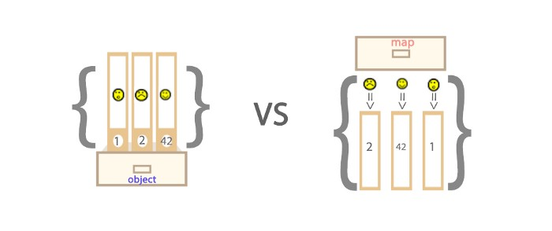

Map オブジェクト
Map オブジェクトはキーと値のペアを保存します。任意の値（オブジェクトまたはプリミティブ値）をキーまたは値として使用できます。
Maps と Objects の違い
- Object のキーは文字列または Symbols のみですが、Map のキーは任意の値にできます。
- Map のキーと値は順序付けられています（FIFO の原則）が、オブジェクトに追加されたキーは順序付けられていません。
- Map のキーと値のペアの数は size プロパティから取得できますが、Object のキーと値のペアの数は手動で計算するしかありません。
- Object はそれぞれ独自のプロトタイプを持ち、プロトタイプチェーン上のキー名が自分でオブジェクトに設定したキー名と衝突する可能性があります。

Map の key
key が文字列の場合
var myMap = new Map();
var keyString = "a string";
myMap.set(keyString, "キー 'a string' に関連付けられた値");
myMap.get(keyString); //"キー 'a string' に関連付けられた値"
myMap.get("a string"); //"キー 'a string' に関連付けられた値"
//keyString === 'a string' であるため
key がオブジェクトの場合
var myMap = new Map();
var keyObj = {},
myMap.set(keyObj, "キー keyObj に関連付けられた値");
myMap.get(keyObj); //"キー keyObj に関連付けられた値"
myMap.get({}); //undefined。keyObj !== {} であるため
key が関数の場合
var myMap = new Map();
var keyFunc = function () {}, //関数
myMap.set(keyFunc, "キー keyFunc に関連付けられた値");
myMap.get(keyFunc); //"キー keyFunc に関連付けられた値"
myMap.get(function() {}) //undefined。keyFunc !== function () {} であるため
key が NaN の場合
var myMap = new Map();
myMap.set(NaN, "not a number");
myMap.get(NaN); // "not a number"
var otherNaN = Number("foo");
myMap.get(otherNaN); // "not a number"
NaN は任意の値、さらには自分自身とも等しくありませんが（NaN !== NaN は true を返します）、NaN は Map のキーとしては区別されません。
Map の反復
Map を走査するには、以下の2つが最も高レベルです。
for...of
var myMap = new Map();
myMap.set(0, "zero");
myMap.set(1, "one");
//2つのログが表示されます。1つは "0 = zero"、もう1つは "1 = one" です。
for (var [key, value] of myMap) {
console.log(key + " = " + value);
}
for (var [key, value] of myMap.entries()) {
console.log(key + " = " + value);
}
/*この entries メソッドは、挿入順に Map オブジェクト内の各要素の [key, value] 配列を含む新しい Iterator オブジェクトを返します。*/
//2つのログが表示されます。1つは "0"、もう1つは "1" です。
for (var key of myMap.keys()) {
console.log(key);
}
/*この keys メソッドは、挿入順に Map オブジェクト内の各要素のキーを含む新しい Iterator オブジェクトを返します。*/
//2つのログが表示されます。1つは "zero"、もう1つは "one" です。
for (var value of myMap.values()) {
console.log(value);
}
/*この values メソッドは、挿入順に Map オブジェクト内の各要素の値を含む新しい Iterator オブジェクトを返します。*/
forEach()
var myMap = new Map();
myMap.set(0, "zero");
myMap.set(1, "one");
//2つのログが表示されます。1つは "0 = zero"、もう1つは "1 = one" です。
myMap.forEach(function(value, key) {
console.log(key + " = " + value);
}, myMap)
Map オブジェクトの操作
Map と Array の変換
var kvArray = [["key1", "value1"], ["key2", "value2"]];
//Map コンストラクタは、2次元のキーと値のペア配列を Map オブジェクトに変換できます。
var myMap = new Map(kvArray);
//Array.from 関数を使用すると、Map オブジェクトを2次元のキーと値のペア配列に変換できます。
var outArray = Array.from(myMap);
Map のクローン
var myMap1 = new Map([["key1", "value1"], ["key2", "value2"]]);
var myMap2 = new Map(myMap1);
console.log(original === clone);
//false が出力されます。Map オブジェクトのコンストラクタがインスタンスを生成し、反復して新しいオブジェクトを作り出します。
Map のマージ
var first = new Map([[1, 'one'], [2, 'two'], [3, 'three'],]);
var second = new Map([[1, 'uno'], [2, 'dos']]);
//2つの Map オブジェクトをマージするとき、重複するキーがある場合は後者が前者を上書きします。対応する値は uno、dos、three です。
var merged = new Map([...first, ...second]);
Set オブジェクト
Set オブジェクトは、プリミティブ値であれオブジェクト参照であれ、任意の型の一意な値を格納できます。
Set の特殊な値
Set オブジェクトに格納される値は常に一意であるため、2つの値が厳密に等しいかどうかを判断する必要があります。いくつかの特殊な値は特別に扱う必要があります：
- +0 と -0 は、格納時の一意性の判断において厳密に等しいため、重複しません；
- undefined と undefined は厳密に等しいため、重複しません；
- NaN と NaN は厳密には等しくありませんが、Set には1つしか格納できず、重複しません。
コード
let mySet = new Set();
mySet.add(1); // Set(1) {1}
mySet.add(5); // Set(2) {1, 5}
mySet.add(5); //Set(2) {1, 5} ここでは値の一意性が示されています
mySet.add("some text");
//Set(3) {1, 5, "some text"} ここでは型の多様性が示されています
var o = {a: 1, b: 2};
mySet.add(o);
mySet.add({a: 1, b: 2});
// Set(5) {1, 5, "some text", {…}, {…}}
//ここでは、オブジェクト間で参照が異なり厳密には等しくない場合でも、値が同じであれば Set に格納できることが示されています
型変換
Array
//Array を Set に変換
var mySet = new Set(["value1", "value2", "value3"]);
//... 演算子を使用して、Set を Array に変換
var myArray = [...mySet];
String
//String を Set に変換
var mySet = new Set('hello'); // Set(4) {"h", "e", "l", "o"}
//注：Set の toString メソッドは Set を String に変換できません
Set オブジェクトの用途
配列の重複除去
var mySet = new Set([1, 2, 3, 4, 4]);
[...mySet]; // [1, 2, 3, 4]
和集合
var a = new Set([1, 2, 3]);
var b = new Set([4, 3, 2]);
var union = new Set([...a, ...b]); // {1, 2, 3, 4}
積集合
var a = new Set([1, 2, 3]);
var b = new Set([4, 3, 2]);
var intersect = new Set([...a].filter(x => b.has(x))); // {2, 3}
差集合
var a = new Set([1, 2, 3]);
var b = new Set([4, 3, 2]);
var difference = new Set([...a].filter(x => !b.has(x))); // {1}
mokit
zbi***g@163.com
差集合の計算：
var a = new Set([1, 2, 3]); var b = new Set([4, 3, 2]); var difference =new Set([...[...a].filter(x => !b.has(x)),...[...b].filter(x => !a.has(x))]); // {1,4}1 は a と b の差集合です。
4 は b と a の差集合です。
mokit
zbi***g@163.com
冰块
134***0547@qq.com
このプログラムを理解するのは確かに少し難しいです。
var a = new Set([1, 2, 3]); var b = new Set([4, 3, 2]); var intersect = new Set([...a].filter(x => b.has(x))); // {2, 3}なぜなら、このプログラムを理解するために必要な知識ポイントがいくつかあるからです。
1、[...a]
[...a] は set を array に変換することです。今後 set を array に変換する必要がある場合は、基本的にこの方法を使用します。
2、[...a].filter()
Array.filter(function(x)) は渡された関数 function(x) を各要素に順番に適用し、x は要素の値です。そして戻り値が true か false かに応じて、その要素を保持するか破棄するかを決定します。
つまり、現在の配列を走査し、ある要素を走査したときに戻り値が false であれば、その要素を配列から除外します。
filter() メソッドは新しい配列を作成します。新しい配列の要素は、指定された配列内の条件を満たすすべての要素をチェックして得られます。
3、=> は簡略化した記述方法です。
次と同等です：
function(x){return x*x}したがって x => b.has(x)本質的には関数であり、次と同等ですfunction(x){return b.has（x)}。
4、b.has(x)
Set.has(x) は set のメソッドです。つまり、現在の set に x が含まれているかどうかを判断し、含まれていれば true を返し、含まれていなければ false を返します。
したがって、このプログラムは次のように書くこともできます：
var a = new Set([1, 2, 3]); var b = new Set([4, 3, 2]); var arr = [...a]; //将a转换成数组 var fArr = arr.filter(function(x){ //使用filter过滤数组，并将新数组返回到fArr return b.has(x); //判断b中是否含有a中的元素，没有则返回false }) var intersect = new Set(fArr); //将fArr转换成set console.log(fArr);冰块
134***0547@qq.com